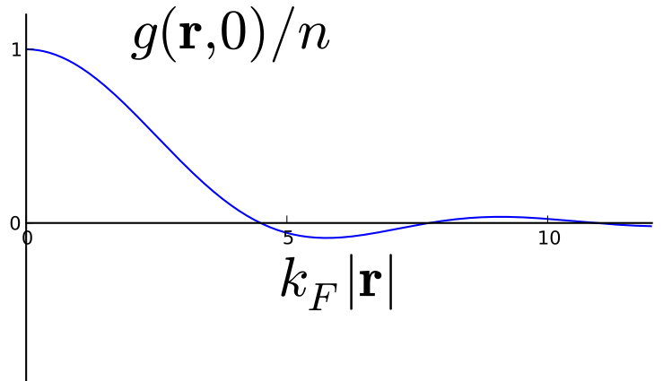

A is for Annihilation
\[ \DeclareMathOperator{\tr}{tr} \DeclareMathOperator{\E}{\mathbb{E}} \]
We have seen that product states can be described in terms of their occupation numbers. We now introduce a language to describe many body states, and the operators that act on them, that is adapted to this description. This method of second quantization represents the beginning of the field theoretic description of many body systems.
Reading: Baym (2018), Nazarov and Danon (2013).
1 Creation and Annihilation Operators
When we discussed the elastic chain in Lecture 3, we saw that the quanta of the normal modes of the chain could be thought of as bosons. The essence of second quantization is to turn this observation around, and formally introduce creation and annihilation operators that add and remove bosons to a system. Subsequently, we identify these operators as components of a quantum field. Whether you think of the field as a physical entity – with the bosons appearing upon quantization – or as a mathematical device for representing a system of indistinguishable particles is a question of taste. The former point of view is more common in particle physics, the latter in condensed matter.
1.1 Recap: Product States
Remember that in Lecture 1 we saw that a normalized product state of \(N\) bosons occupying orthonormal states \(\varphi_{\alpha_n}(\mathbf{r})\) \(n=1,\ldots, N\) is
\[ \Psi^{\text{S}}_{\alpha_{1}\alpha_{2}\cdots\alpha_{N}}(\mathbf{r}_1,\ldots,\mathbf{r}_N)=\sqrt{\frac{1}{N!\prod_{\alpha}N_{\alpha}!}}\sum_P\varphi_{\alpha_{1}}(\mathbf{r}_{P_1})\varphi_{\alpha_{2}}(\mathbf{r}_{P_2})\cdots\varphi_{\alpha_{N}}(\mathbf{r}_{P_N}), \tag{1}\]
where the sum is over all permutations of \(N\) objects. The normalization factor involves the occupation numbers \(\{N_{\alpha}\}\) giving the number of particles in state \(\alpha\).
More generally, let’s consider the (unnormalized) symmetric product state formed from any set of single particle wavefunctions \(\psi_n(\mathbf{r})\), not necessarily orthonormal
\[ \Psi^{\text{S}}(\mathbf{r}_1,\ldots,\mathbf{r}_N) = \frac{1}{\sqrt{N!}}\sum_P\psi_1(\mathbf{r}_{P_1})\psi_{2}(\mathbf{r}_{P_2})\cdots\psi_{N}(\mathbf{r}_{P_N}). \tag{2}\]
Let’s compute the inner product with another symmetric state formed from wavefunctions \(\phi_n(\mathbf{r})\)
\[ \Phi^{\text{S}}(\mathbf{r}_1,\ldots,\mathbf{r}_N) = \frac{1}{\sqrt{N!}}\sum_P\phi_1(\mathbf{r}_{P_1})\phi_{2}(\mathbf{r}_{P_2})\cdots\phi_{N}(\mathbf{r}_{P_N}). \]
The result is
\[ \langle{\Psi}\rvert\Phi\rangle = \sum_P \prod_{n=1}^N\langle{\psi_n}\rvert\phi_{P_n}\rangle = \operatorname{perm} \langle{\psi_m}\rvert\phi_{n}\rangle, \tag{3}\]
where we have introduced the permanent of the matrix \(\langle{\psi_m}\rvert\phi_{n}\rangle\), which is defined just like the determinant that we met in the case of fermions, but without the minus signs.
Satisfy yourself that Equation 3 agrees with Equation 1 in the case of orthonormal single particle wavefunctions.
1.2 Creation and Annihilation Operators
Our starting point is the vacuum state, which we’ll denote by \(\lvert{\text{VAC}}\rangle\) to distinguish it from the ground state. The vacuum state corresponds to the state with no particles. Up to now, we have worked with many body wavefunctions having just as many arguments as we have particles, but since we are now considering a formalism in which there are states with different numbers of particles, we have to allow for that number to be zero.
The creation operator \(a^\dagger(\psi)\) creates a particle in the single particle state \(\psi(\mathbf{r})\) (the reason for introducing the adjoint operator as the creation operator will become clear: for the moment let’s just take it that it’s the adjoint of something.). This means we identify
\[ \psi(\mathbf{r})\longleftrightarrow a^\dagger(\psi)\lvert{\text{VAC}}\rangle. \tag{4}\]
More generally, if \(\lvert{\Psi}\rangle\) is an \(N\) particle state, \(a^\dagger(\psi)\lvert{\Psi}\rangle\) is an \(N+1\) particle state. Since this is orthogonal to the vacuum state
\[ \langle{\text{VAC}}\rvert a^\dagger(\psi)\lvert{\Psi}\rangle=0, \]
for any state \(\lvert{\Psi}\rangle\). This means, taking the adjoint
\[ a^{\vphantom{\dagger}}(\psi)\lvert{\text{VAC}}\rangle=0. \]
Evidently, \(a^\dagger(\psi)\) must be linear in \(\psi\)
\[ a^\dagger\left(c_1\psi_1+c_2\psi_2\right) = c_1a^\dagger(\psi_1)+c_2a^\dagger(\psi_2). \]
Generalizing Equation 4, we represent an \(N\) particle product state Equation 2 as
\[ \Psi^{\text{S}}(\mathbf{r}_1,\ldots,\mathbf{r}_N) \longleftrightarrow a^\dagger(\psi_1)\cdots a^\dagger(\psi_N)\lvert{\text{VAC}}\rangle. \tag{5}\]
For this to be a symmetric wavefunction, it’s clear that we must have
\[ \left[a^\dagger(\psi),a^\dagger(\phi)\right]=0 \tag{6}\]
for any states \(\psi(\mathbf{r})\) and \(\phi(\mathbf{r})\). Taking the adjoint gives
\[ \left[a^{\vphantom{\dagger}}(\psi),a^{\vphantom{\dagger}}(\phi)\right]=0 \tag{7}\]
This isn’t the only requirement however: we need to make sure that the inner product comes out right. Evaluating the inner product between two one particle states on both sides of the correspondence Equation 4 gives
\[ \langle{\psi}\rvert\phi\rangle = \langle{\text{VAC}}\rvert a^{\vphantom{\dagger}}(\psi)a^\dagger(\phi) \lvert \text{VAC} \rangle. \]
To be nonzero \(a^{\vphantom{\dagger}}(\psi)a^\dagger(\phi)\lvert{\text{VAC}}\rangle\) must be proportional to the vacuum state, which means \(a^{\vphantom{\dagger}}(\psi)\) removes a particle from the system: it is an annihilation operator. To get the right value for the inner product, we impose
\[ \left[a^{\vphantom{\dagger}}(\psi),a^\dagger(\phi)\right] = \langle{\psi}\rvert \phi \rangle. \tag{8}\]
Show that this also reproduces Equation 3.
Equation 6, Equation 7, and Equation 8 constitute the bosonic canonical commutation relations. Via Equation 8, this representation inherits the properties of the single particle Hilbert space.
1.3 Choosing a Basis
By choosing a basis for the single particle states, we choose a basis for the creation and annihilation operators. Denote an orthonormal basis by \(\varphi_\alpha(\mathbf{r})\), with the corresponding creation and annihilation operators
\[ a^\dagger(\varphi_\alpha)\equiv a^\dagger_\alpha,\quad a^{\vphantom{\dagger}}(\varphi_\alpha)\equiv a^{\vphantom{\dagger}}_\alpha. \tag{9}\]
Then we have
\[ \begin{align} \left[a^{\vphantom{\dagger}}_\alpha,a^{\vphantom{\dagger}}_\beta\right]=0,\quad \left[a^\dagger_\alpha,a^\dagger_\beta\right]=0,\quad \left[a^{\vphantom{\dagger}}_\alpha,a^\dagger_\beta\right] = \delta_{\alpha\beta}. \end{align} \]
The same relations describe the ladder operators of a set of independent harmonic oscillators, revealing a deep connection between these two systems. The state \(\Psi^{\text{S}}_{\alpha_{1}\alpha_{2}\cdots\alpha_{N}}\) of Equation 1 – a normalized state with \(N_\alpha\) particles in state \(\alpha\) – may be written
\[ \Psi^{\text{S}}_{\alpha_{1}\alpha_{2}\cdots\alpha_{N}}(\mathbf{r}_1,\ldots,\mathbf{r}_N) \longleftrightarrow\lvert{\mathbf{N}}\rangle \equiv \prod_\alpha \frac{\left(a^\dagger_\alpha\right)^{N_\alpha}}{\sqrt{N_\alpha!}}\lvert{\text{VAC}}\rangle \tag{10}\]
The combination \(\mathsf{N}^{\vphantom{\dagger}}_{\alpha}\equiv a^\dagger_{\alpha}a^{\vphantom{\dagger}}_{\alpha}\) is called the number operator for state \(\alpha\) for obvious reasons
\[ \label{2nd_quant_NOp} \mathsf{N}^{\vphantom{\dagger}}_{\alpha}\lvert{\mathbf{N}}\rangle=N_{\alpha}\lvert{\mathbf{N}}\rangle. \]
From Equation 9 it follows that
\[ \begin{align} \left[a^{\vphantom{\dagger}}_{\alpha},\mathsf{N}^{\vphantom{\dagger}}_{\alpha}\right]&=a^{\vphantom{\dagger}}_{\alpha}\nonumber\\ \left[a^\dagger_{\alpha},\mathsf{N}^{\vphantom{\dagger}}_{\alpha}\right]&=-a^\dagger_{\alpha}. \label{2nd_quant_NaComm} \end{align} \]
You can think of the first of these as “count then destroy minus destroy then count”, for example.
Suppose we want to move to a different basis of single particle states \(\{\lvert{\tilde{\varphi}_{\alpha}}\rangle\}\), corresponding to a unitary transformation
\[ \label{2nd_quant_BasisChange} \lvert{\tilde{\varphi}_{\alpha}}\rangle=\sum_{\beta} \langle{\varphi_{\beta}}\rvert \tilde{\varphi}_{\alpha} \rangle\lvert{\varphi_{\beta}}\rangle. \]
Using our correspondence, the one particle states with the wavefunctions \(\varphi_{\alpha}(\mathbf{r})\) are just \(a^\dagger_{\alpha}\lvert{\text{VAC}}\rangle\). So we see that the above basis transformation gives a new set of creation operators
\[ \tilde{a^\dagger_{\alpha}}\equiv\sum_{\beta} \langle{\varphi_{\beta}}\rvert \tilde{\varphi}_{\alpha} \rangle a^\dagger_{\beta}. \tag{11}\]
Often we will work in the basis of position eigenstates \(\{\lvert{\mathbf{r}}\rangle\}\). In this case the matrix elements of the unitary transformation are \(\langle{\varphi_{\beta}}\rvert \mathbf{r} \rangle=\varphi^{*}_{\beta}(\mathbf{r})\), just the complex conjugate of the wavefunction. Denoting the corresponding creation operator as \(\psi^\dagger(\mathbf{r})\), Equation 11 becomes
\[ \psi^\dagger(\mathbf{r})\equiv\sum_{\beta} \varphi^{*}_{\beta}(\mathbf{r})a^\dagger_{\beta}. \tag{12}\]
Now we can see why we chose to work with the annihilation operator rather than the creation operator. The conjugate of Equation 12 is
\[ \psi^{\vphantom{\dagger}}(\mathbf{r})\equiv\sum_{\beta} \varphi_{\beta}(\mathbf{r})a^{\vphantom{\dagger}}_{\beta}, \tag{13}\]
and involves the wavefunctions \(\varphi_{\beta}(\mathbf{r})\), rather than their conjugates. The relations satisfied by these operators are
\[ \begin{gather} \left[\psi^{\vphantom{\dagger}}(\mathbf{r}_1),\psi^\dagger(\mathbf{r}_2)\right]=\delta(\mathbf{r}_1-\mathbf{r}_2)\nonumber\\ \left[\psi^{\vphantom{\dagger}}(\mathbf{r}_1),\psi^{\vphantom{\dagger}}(\mathbf{r}_2)\right]=\left[\psi^\dagger(\mathbf{r}_1),\psi^\dagger(\mathbf{r}_2)\right]=0. \end{gather} \tag{14}\]
These operator-valued functions are called quantum fields. By introducing them, we have freed ourselves from many body wavefunctions. One should bear in mind that this is only a different language for talking about the same system: sometimes one language is better suited to the problem at hand; sometimes another.
If a state \(\lvert{\Psi}\rangle\) has wavefunction \(\Psi(x_1,\ldots, x_N)\), show that the wavefunction of the state \(\psi^{\vphantom{\dagger}}(x)\lvert{\Psi}\rangle\) is the \(N-1\) particle wavefunction
\[ \sqrt{N}\Psi(x,x_1,\ldots, x_{N-1}) \tag{15}\]
Hint: Show that this is true for a product state first.
As an example, let our original basis be the eigenbasis of the free particle Hamiltonian \(H=\frac{\mathbf{p}^{2}}{2m}\) with periodic boundary conditions
\[ \begin{align} \label{2nd_quant_FreeParticleStates} \lvert{\mathbf{k}}\rangle=\frac{\exp(i\mathbf{k}\cdot \mathbf{r})}{\sqrt{V}}, \quad \mathbf{k}=2\pi\left(\frac{n_{x}}{L_{x}},\frac{n_{y}}{L_{y}},\frac{n_{z}}{L_{z}}\right),\quad n_{x,y,z}\text{ integer}, \end{align} \]
with \(V=L_{x}L_{y}L_{z}\). The matrix elements of the transformation between this original basis and the position basis \(\{\lvert{\mathbf{r}}\rangle\}\) are \(\langle{\mathbf{k}}\rvert\mathbf{r}\rangle=\exp(-i\mathbf{k}\cdot \mathbf{r})/\sqrt{V}\), so we have
\[ \label{2nd_quant_PositionAnnihilation} \psi^\dagger(\mathbf{r})\equiv\frac{1}{\sqrt{V}}\sum_{\mathbf{k}} \exp(-i\mathbf{k}\cdot\mathbf{r})a^\dagger_{\mathbf{k}}, \]
and similarly
\[ \label{2nd_quant_PositionCreation} \psi^{\vphantom{\dagger}}(\mathbf{r})\equiv\frac{1}{\sqrt{V}}\sum_{\mathbf{k}} \exp(i\mathbf{k}\cdot\mathbf{r})a^{\vphantom{\dagger}}_{\mathbf{k}}. \]
What is the wavefunction of the two-particle state
\[ \sum_\mathbf{k}c_k a^\dagger_\mathbf{k}a^\dagger_{-\mathbf{k}}\lvert{\text{VAC}}\rangle? \]
1.4 The Case of Fermions
We want a similar formalism for fermions, which is a bit trickier on account of those minus signs. We seek a representation of the product state
\[ \Psi^{\text{A}}(\mathbf{r}_1,\ldots,\mathbf{r}_N) = \frac{1}{\sqrt{N!}}\sum_P (-1)^P\psi_1(\mathbf{r}_{P_1})\psi_{2}(\mathbf{r}_{P_2})\cdots\psi_{N}(\mathbf{r}_{P_N}). \label{A_NProdAnti} \]
where \(P\) is the signature of the permutation. Note that the overall sign is fixed here by the labelling of the states \(\psi_j\). If we want to make the identification
\[ \Psi^{\text{A}}(\mathbf{r}_1,\ldots,\mathbf{r}_N) \longleftrightarrow a^\dagger(\psi_1)\cdots a^\dagger(\psi_N)\lvert{\text{VAC}}\rangle, \tag{16}\]
Then antisymmetry dictates
\[ \left\{a^\dagger(\psi),a^\dagger(\phi)\right\}=0, \label{A_adanticommute} \]
for any states \(\psi(\mathbf{r})\) and \(\phi(\mathbf{r})\), where \(\{A,B\}\equiv AB+BA\) is called the anticommutator. Similarly
\[ \left\{a^{\vphantom{\dagger}}(\psi),a^{\vphantom{\dagger}}(\phi)\right\}=0. \label{A_aanticommute} \]
The form of \(\left\{a^{\vphantom{\dagger}}(\psi),a^\dagger(\phi)\right\}\) can be deduced from the inner product between product states
\[ \langle{\Psi}\rvert\Phi\rangle = \sum_P (-1)^P\prod_{n=1}^N\langle{\psi_n}\rvert\phi_{P_n}\rangle = \det \langle{\psi_m}\rvert\phi_{n}\rangle, \label{A_det} \]
which can be obtained using the RHS of Equation 16 if we demand
\[ \left\{a^{\vphantom{\dagger}}(\psi),a^\dagger(\phi)\right\} = \langle{\psi}\rvert \phi \rangle. \label{A_adaanti} \]
Check this.
Introducing field operators in the position basis as before leads to a system of operators satisfying the anticommutation relations
\[ \begin{gather} \left\{\psi^{\vphantom{\dagger}}(\mathbf{r}_1),\psi^\dagger(\mathbf{r}_2)\right\}=\delta(\mathbf{r}_1-\mathbf{r}_2)\nonumber\\ \left\{\psi^{\vphantom{\dagger}}(\mathbf{r}_1),\psi^{\vphantom{\dagger}}(\mathbf{r}_2)\right\}=\left\{\psi^\dagger(\mathbf{r}_1),\psi^\dagger(\mathbf{r}_2)\right\}=0. \label{2nd_quant_PositionRelationsAnti} \end{gather} \]
Show that in the fermionic case the wavefunction of the state \(\psi^{\vphantom{\dagger}}(x)\lvert{\Psi}\rangle\) is still given by Equation 15.
2 Discussion: How Do \(a^{\vphantom{\dagger}}_\alpha\) and \(a^\dagger_\alpha\) Look?
Think about the form that the operators \(a^{\vphantom{\dagger}}_\alpha\), \(a^\dagger_\alpha\) take in the basis of product states. Start with one state \(\varphi_\alpha\). What’s the matrix form of \(a^\dagger_\alpha\) in terms of states \(\lvert{N_\alpha}\rangle\)? Now consider two states. Can you see how the commutation and anticommutation relations can be satisfied?
3 Representation of Operators
3.1 One Particle Operators
Suppose we now have some operator \(A\) that acts on the single particle states. We denote the action on \(N\) particle states as \(\hat A\)
\[ \hat A = \sum_{j=1}^N A_j, \tag{17}\]
where the subscript denotes that the operator acts on the position label \(\mathbf{r}_j\) of the \(j^\text{th}\) particle. The example that we have met many times already is the Hamiltonian for noninteracting particles
\[ \hat H = \sum_{j=1}^N H_j = \sum_{j=1}^N \left[-\frac{\nabla_j^2}{2m}+V(\mathbf{r}_j)\right]. \tag{18}\]
Operators of this type are known as one particle operators. We want to use our creation and annihilation operators to represent these operators.
First, the action of the operator \(A\) on one of the basis states \(\lvert{\varphi_\beta}\rangle\) can be written in terms of the matrix elements \(A_{\alpha\beta}=\langle{\varphi_\alpha}\rvert A \lvert \varphi_\beta \rangle\) by inserting a resolution of the identity \(\sum_\alpha \lvert{\alpha}\rangle\langle{\alpha}\rvert=1\) on the right \[ A\lvert{\varphi_\beta}\rangle = \sum_{\alpha} \lvert{\varphi_\alpha}\rangle\langle{\varphi_\alpha}\rvert A \lvert \varphi_\beta \rangle = \sum_\alpha A_{\alpha\beta}\lvert{\varphi_\alpha}\rangle. \]
The same thing may be expressed slightly differently by inserting resolutions of the identity on the left and right \[ A= \sum_{\alpha\beta} \lvert{\varphi_\alpha}\rangle\langle{\varphi_\alpha}\rvert A \lvert \varphi_\beta \rangle\langle{\varphi_\beta}\rvert = \sum_{\alpha\beta} A_{\alpha\beta}\lvert{\varphi_\alpha}\rangle\langle{\varphi_\beta}\rvert. \]
Therefore, the action of \(\hat A\) on the product state \(\lvert{\Psi^{\text{S}}_{\alpha_{1}\alpha_{2}\cdots\alpha_{N}}}\rangle\) is \[ \hat A \lvert{\Psi^{\text{S}}_{\beta_{1}\beta_{2}\cdots\beta_{N}}}\rangle = \sum_\alpha \left[A_{\alpha\beta_1}\lvert{\Psi^{\text{S}}_{\alpha\beta_{2}\cdots\beta_{N}}}\rangle +A_{\alpha\beta_2}\lvert{\Psi^{\text{S}}_{\beta_1\alpha\cdots\beta_{N}}}\rangle+\cdots A_{\alpha\beta_N}\lvert{\Psi^{\text{S}}_{\beta_1\beta_{2}\cdots\alpha}}\rangle\right] \tag{19}\]
Now we argue that the same job is done by
\[ \hat A = \sum_{\alpha\beta}A_{\alpha\beta}a^\dagger_\alpha a^{\vphantom{\dagger}}_\beta \]
acting on the state \(\lvert{\mathbf{N}}\rangle\). Indeed, we have
\[ \left[a^\dagger_\alpha a^{\vphantom{\dagger}}_\beta,a^\dagger_\gamma\right]=a^\dagger_\alpha\delta_{\beta\gamma} \tag{20}\]
By commuting \(a^\dagger_\alpha a^{\vphantom{\dagger}}_\beta\) though each of the creation operators in
\[ \lvert{\mathbf{N}}\rangle \equiv \prod_\alpha \frac{\left(a^\dagger_\alpha\right)^{N_\alpha}}{\sqrt{N_\alpha!}}\lvert{\text{VAC}}\rangle, \]
we reproduce the action Equation 19. As a simple example,
\[ \begin{align} \label{2nd_quant_} \mathop{\hat A}a^\dagger_{\beta}\lvert{\text{VAC}}\rangle&=\left(\left[\mathop{\hat A},a^\dagger_{\beta}\right]+a^\dagger_{\beta}\mathop{\hat A}\right)\lvert{\text{VAC}}\rangle\nonumber\\ &=\sum_{\alpha} A_{\alpha \beta} a^\dagger_{\alpha}\lvert{\text{VAC}}\rangle. \end{align} \]
The second quantized form of \(\hat A\) allows us to find the matrix element \(\langle{\mathbf{N}}\rvert \hat A \lvert \mathbf{N'} \rangle\) between product states made of orthonormal single particle states. This vanishes unless \(\mathbf{N}\) and \(\mathbf{N'}\) differ by the movement of of one particle. If \(N_\beta = N'_\beta-1\) and \(N_\alpha = N'_\alpha+1\) we have
\[ \langle{\mathbf{N}}\rvert \hat A \lvert \mathbf{N'} \rangle = A_{\alpha\beta} \sqrt{N_\alpha N'_\beta}. \tag{21}\]
This formula is not so easy to work out in the first quantized representation. Try it!
We worked this out for the bosonic case. However, you can check that Equation 20, the basic relation that makes it all work, is also valid for fermions (as a commutation relation, note!). So \(\hat A\) has the same form for fermions.
Notice that \(\mathop{\hat A}\) looks formally like the expectation value of \(\mathop{A}\) in a single particle state \(\sum_{\alpha}a_{\alpha}\lvert{\varphi_{\alpha}}\rangle\). The difference, of course, is that the \(a_{\alpha}\) in \(\mathop{\hat A}\) are operators, so that the order is important, while those in the preceding expression are amplitudes. The replacement of amplitudes, or wavefunctions, by operators is the origin of the rather clumsy name second quantization, which is traditionally introduced with the caveat that what we are doing is not in any way ‘more quantum’ than before.
To repeat the above prescription for emphasis: A one particle operator \(\mathop{\hat A}\) has a second quantized representation formally identical to the expectation value of its single particle counterpart \(\mathop{A}\).
This probably all looks a bit abstract, so let’s turn to a one particle operator that we have already met, namely the noninteracting Hamiltonian in Equation 18. According to the above prescription, this should have the second quantized form
\[ \label{2nd_quant_H2ndQ} \mathop{\hat H} \equiv \sum_{\alpha,\beta}\langle{\varphi_{\alpha}}\rvert \mathop{H} \lvert \varphi_{\beta} \rangle a^\dagger_{\alpha}a^{\vphantom{\dagger}}_{\beta}, \]
where \(H\) is the single particle Hamiltonian \(H=-\frac{1}{2m}\nabla_{i}^{2}+V(\mathbf{r_{i}})\). This takes on a very simple form if the basis \(\lvert{\varphi_{\alpha}}\rangle\) is just the eigenbasis of this Hamiltonian, in which case \(\langle{\varphi_{\alpha}}\rvert \mathop{H} \lvert \varphi_{\beta} \rangle=E_{\alpha}\delta_{\alpha \beta}\) and
\[ \begin{align} \mathop{\hat H} \equiv \sum_{\alpha} E_{\alpha} a^\dagger_{\alpha}a^{\vphantom{\dagger}}_{\alpha}=\sum_{\alpha} E_{\alpha} \mathsf{N}^{\vphantom{\dagger}}_{\alpha}. \end{align} \tag{22}\]
Evidently this is correct: the eigenstates of this operator are just the \(N\) particle basis states \(\lvert{\Psi^{S/A}_{\alpha_{1}\alpha_{2}\cdots \alpha_{N}}}\rangle\), with eigenvalues \(\sum_\alpha N_\alpha E_\alpha\).
Alternatively, we can look at things in the position basis. By recalling how the expectation value of the Hamiltonian looks in this basis, we come up with
\[ \begin{align} \mathop{\hat H}&=\int d\mathbf{r}\left[-\frac{1}{2m}\psi^\dagger(\mathbf{r})\nabla^{2}\psi^{\vphantom{\dagger}}(\mathbf{r})+V(\mathbf{r})\psi^\dagger(\mathbf{r})\psi^{\vphantom{\dagger}}(\mathbf{r})\right]\nonumber\\ &=\int d\mathbf{r}\left[\frac{1}{2m}\nabla\psi^\dagger(\mathbf{r})\cdot\nabla\psi^{\vphantom{\dagger}}(\mathbf{r})+V(\mathbf{r})\psi^\dagger(\mathbf{r})\psi^{\vphantom{\dagger}}(\mathbf{r})\right], \end{align} \tag{23}\]
where in the second line we have integrated by parts, assuming that boundary terms at infinity vanish. The equality of Equation 23 and Equation 22 may be seen by using Equation 13.
The Heisenberg equation of motion corresponding to Equation 23 is
\[ \begin{equation} \label{2nd_quant_HeomFree} \begin{split} i\partial_{t}\psi^{\vphantom{\dagger}}(\mathbf{r},t) &= -\left[\mathop{\hat H},\psi^{\vphantom{\dagger}}(\mathbf{r},t)\right]\\ &= -\frac{1}{2m}\nabla^{2}\psi^{\vphantom{\dagger}}(\mathbf{r},t)+V(\mathbf{r})\psi^{\vphantom{\dagger}}(\mathbf{r},t), \end{split} \end{equation} \]
which is just the time dependent Schrödinger equation!
As a second example, consider the particle density. This is not something that one encounters very often in few particle quantum mechanics, but is obviously an observable of interest in a extended system of many particles. The one particle operator for the density at \(\mathbf{x}\) is
\[ \label{2nd_quant_spDens} \rho(\mathbf{x})\equiv\delta(\mathbf{x}-\mathbf{r}). \]
This may look like a rather strange definition, but its expectation value on a single particle state \(\varphi(\mathbf{r})\) is just \(\rho(\mathbf{x})=\lvert{\varphi(\mathbf{x})}\rvert^{2}\), which is just the probability to find the particle at \(\mathbf{x}\). Following our prescription, the second quantized form of the operator is then
\[ \label{2nd_quant_2ndQDens} \hat\rho(\mathbf{x})\equiv\psi^\dagger(\mathbf{x})\psi^{\vphantom{\dagger}}(\mathbf{x}). \]
As a check, integrating over position should give the total number of particles
\[ \label{2nd_quant_DensIntegral} \hat N=\int d\mathbf{x}\, \psi^\dagger(\mathbf{x})\psi^{\vphantom{\dagger}}(\mathbf{x})=\sum_{\alpha} a^\dagger_{\alpha}a^{\vphantom{\dagger}}_{a}=\sum_{\alpha}\mathsf{N}^{\vphantom{\dagger}}_{\alpha}, \]
as it does! Another useful thing to know is the expectation value of the density on a basis state \(\lvert{N_{0},N_{1}\ldots}\rangle\)
\[ \label{2nd_quant_DensityExp} \langle{N_{0},N_{1}\ldots}\rvert \hat\rho(\mathbf{r}) \lvert N_{0},N_{1}\ldots \rangle = \sum_{\alpha} N_{\alpha}\left|\varphi_{\alpha}(\mathbf{r})\right|^{2}. \]
which is most easily proved by substituting the representation Equation 13. This seems like a very reasonable generalization of the single particle result: the density is given by sum of the probability densities in each of the constituent single particle state, weighted by the occupancy of the state. Note that the symmetry of the states played no role here.
As a final example of a one particle operator, the particle current has the second quantized form
\[ \label{2nd_quant_current} \hat{\mathbf{j}}(\mathbf{r})=-i\frac{1}{2m}\left[\psi^\dagger(\mathbf{r})\left(\nabla\psi^{\vphantom{\dagger}}(\mathbf{r})\right)-\left(\nabla\psi^\dagger(\mathbf{r})\right)\psi^{\vphantom{\dagger}}(\mathbf{r})\right]. \]
Often we consider the Fourier components of the density or current
\[ \begin{align} \label{2nd_quant_FourierComp} \hat\rho_{\mathbf{q}}\equiv\int d\mathbf{r}\, \hat\rho(\mathbf{r})e^{-i\mathbf{q}\cdot \mathbf{r}}=\sum_{\mathbf{k}} a^\dagger_{\mathbf{k}-\mathbf{q}/2}a^{\vphantom{\dagger}}_{\mathbf{k}+\mathbf{q}/2}\nonumber\\ \hat{\mathbf{j}}_{\mathbf{q}}\equiv\int d\mathbf{r}\, \hat{\mathbf{j}}(\mathbf{r})e^{-i\mathbf{q}\cdot \mathbf{r}}=\sum_{\mathbf{k}} \frac{\mathbf{k}}{m}a^\dagger_{\mathbf{k}-\mathbf{q}/2}a^{\vphantom{\dagger}}_{\mathbf{k}+\mathbf{q}/2}. \end{align} \]
The \(\mathbf{q}=0\) modes are just the total particle number and \(\frac{1}{m}\) times the total momentum, respectively.
In Lecture 1 we introduced the single particle density matrix
\[ g(\mathbf{r},\mathbf{r}') \equiv N \int d\mathbf{r}_{2}\cdots d\mathbf{r}_{N}\,\Psi^{*}(\mathbf{r},\mathbf{r}_{2},\ldots,\mathbf{r}_{N})\Psi(\mathbf{r}',\mathbf{r}_{2},\ldots,\mathbf{r}_{N}). \]
Show that this can be written in terms of our field operators as
\[ \label{2nd_quant_SPDensity} g(\mathbf{r},\mathbf{r}')= \langle{\Psi}\rvert \psi^\dagger(\mathbf{r})\psi^{\vphantom{\dagger}}(\mathbf{r}') \lvert \Psi \rangle. \]
Notice that \(g(\mathbf{r},\mathbf{r})=\langle{\Psi}\rvert \hat\rho(\mathbf{r}) \lvert \Psi \rangle\). A slight generalization of the above calculation for the density gives for the state \(\lvert{\mathbf{N}}\rangle\)
\[ \label{2nd_quant_SPFock} g(\mathbf{r},\mathbf{r}') = \sum_{\alpha} N_{\alpha}\varphi_{\alpha}^{*}(\mathbf{r})\varphi^{}_{\alpha}(\mathbf{r}'). \]
In Lecture 1 we evaluated \(g(x,y)\) for the ground state of a 1D Fermi gas using the Slater determinant form of the wavefunction. For variety, let’s calculate it using our new method for the 3D Fermi gas. Recall that in this case \(N_{\mathbf{k}}=1\) for \(\lvert{\mathbf{k}}\rvert<k_{F}\), and \(0\) otherwise. Thus the ground state can be written
\[ \lvert{\text{Fermi sea}}\rangle = \prod_{|\mathbf{k}|<k_F} a^\dagger_\mathbf{k}\lvert{\text{VAC}}\rangle \]
Show that
\[ \begin{aligned} \label{2nd_quant_FermiDensityMatrix} g(\mathbf{r},\mathbf{r}')=\frac{1}{V}\sum_{|\mathbf{k}|<k_{F}} e^{i\mathbf{k}\cdot(\mathbf{r}'-\mathbf{r})}&=\int_{|\mathbf{k}|<k_{F}} \frac{d\mathbf{k}}{(2\pi)^{3}}\,e^{i\mathbf{k}\cdot(\mathbf{r}'-\mathbf{r})}\nonumber\\ &=\frac{k_{F}^{3}}{2\pi^{2}}\left[\frac{\sin\left(k_{F}|\mathbf{r}'-\mathbf{r}|\right)}{(k_{F}|\mathbf{r}'-\mathbf{r}|)^{3}}-\frac{\cos\left(k_{F}|\mathbf{r}'-\mathbf{r}|\right)}{(k_{F}|\mathbf{r}'-\mathbf{r}|)^{2}}\right]. \end{aligned} \]
Note that \(g(\mathbf{r},\mathbf{r})=\frac{k_{F}^{3}}{6\pi^{2}}=n\), as it should. Also, \(g(\mathbf{r},\mathbf{r}')\to 0\) as \(\lvert{\mathbf{r}-\mathbf{r}'}\rvert\to\infty\).
Contrast this calculation with the wavefunction version.

3.2 Two Particle Operators
A two particle operator acts pairwise on the particles
\[ \hat B = \sum_{j<k} B_{jk}. \tag{24}\]
Note that \(B_{jk}=B_{kj}\) for indistinguishable particles, and that \(j=k\) is excluded. The most important two particle operator that we will encounter describes interactions between pairs of particles, usually of the form \[ \hat H_\text{int.} = \sum_{j<k} U(\mathbf{r}_j-\mathbf{r}_k). \tag{25}\]
Similar to the single particle case, the action of \(\hat B\) on a two particle product state \(\lvert{\varphi_{\alpha}}\rangle_1\lvert{\varphi_{\beta}}\rangle_2\) can be expressed in terms of the matrix elements \[ \begin{align} B_{\alpha\beta,\gamma\delta} &= \langle{\varphi_\alpha}\rvert\langle{\varphi_\beta}\rvert B_{12} \lvert{\varphi_\gamma}\rangle\lvert{\varphi_\delta}\rangle\nonumber\\ &=\int d\mathbf{r}d\mathbf{r}' \varphi_\alpha^*(\mathbf{r})\varphi_\beta^*(\mathbf{r}')B_{12}\varphi_\gamma(\mathbf{r})\varphi_\delta(\mathbf{r}') \end{align} \]
Note that since \(B_{12}=B_{21}\) we have \(B_{\alpha\beta,\gamma\delta}=B_{\beta\alpha,\delta\gamma}\). In the first quantized representation we have \[ B_{12} = \sum_{\alpha\beta\gamma\delta}B_{\alpha\beta,\gamma\delta}\lvert{\varphi_\alpha}\rangle\lvert{\varphi_\beta}\rangle\langle{\varphi_\gamma}\rvert\langle{\varphi_\delta}\rvert. \] Now we’ll argue that the second quantized representation of \(\hat B\) is \[ \hat B = \frac{1}{2}\sum_{\alpha\beta\gamma\delta} B_{\alpha\beta,\gamma\delta}a^\dagger_\alpha a^\dagger_\beta a^{\vphantom{\dagger}}_\delta a^{\vphantom{\dagger}}_\gamma. \tag{26}\]
(Note the order, which is important for fermions!).
Check that Equation 26 has the correct action on product states, starting with the two particle state
\[ a^\dagger_\gamma a^\dagger_\delta\lvert{\text{VAC}}\rangle\longleftrightarrow \frac{1}{\sqrt{2}}\left[\varphi_\gamma(\mathbf{r}_1)\varphi_\delta(\mathbf{r}_2)\pm \varphi_\delta(\mathbf{r}_1)\varphi_\gamma(\mathbf{r}_2)\right] \] For example, in the first quantized picture we have \[ \begin{align} B_{12}\frac{1}{\sqrt{2}}\left[\varphi_\gamma(\mathbf{r}_1)\varphi_\delta(\mathbf{r}_2)\pm \varphi_\delta(\mathbf{r}_1)\varphi_\gamma(\mathbf{r}_2)\right]&=\frac{1}{\sqrt{2}}\sum_{\alpha\beta}\left[B_{\alpha\beta,\gamma\delta}\pm B_{\alpha\beta,\delta\gamma}\right]\varphi_\alpha(\mathbf{r}_1)\varphi_\beta(\mathbf{r}_2). \end{align} \] Note that this is (anti-)symmetric for bosons (fermions) by virtue of \(B_{\alpha\beta,\gamma\delta}=B_{\beta\alpha,\delta\gamma}\). In second quantized notation the resulting state is written \[ \frac{1}{\sqrt{2}}\sum_{\alpha\beta}\left[B_{\alpha\beta,\gamma\delta}\pm B_{\alpha\beta,\delta\gamma}\right]\varphi_\alpha(\mathbf{r}_1)\varphi_\beta(\mathbf{r}_2)\longleftrightarrow\sum_{\alpha\beta}B_{\alpha\beta}a^\dagger_\alpha a^\dagger_\beta\lvert{\text{VAC}}\rangle \] Which is the same as we get if we act with Equation 26 \[ \left(\frac{1}{2}\sum_{\alpha\beta cd} B_{\alpha\beta,cd}a^\dagger_\alpha a^\dagger_\beta a^{\vphantom{\dagger}}_da^{\vphantom{\dagger}}_c\right)a^\dagger_\gamma a^\dagger_\delta\lvert{\text{VAC}}\rangle=\sum_{\alpha\beta}B_{\alpha\beta}a^\dagger_\alpha a^\dagger_\beta\lvert{\text{VAC}}\rangle. \] Make sure to trace down factor of 2!
The analog of the formula Equation 21 for the matrix elements of a two particle operator between two product states is \[ \langle{\mathbf{N}}\rvert \hat B \lvert \mathbf{N'} \rangle =\left[B_{\alpha\beta,\gamma\delta}\pm B_{\alpha\beta,\delta\gamma}\right] \sqrt{N_\alpha N_\beta N'_\gamma N'_\delta}, \label{A_Babcd} \] with \(N_{\gamma,\delta} = N'_{\gamma,\delta}-1\) and \(N_{\alpha,\beta} = N'_{\alpha,\beta}+1\).
Strictly this formula is not correct when \(\gamma=\delta\) or \(\alpha=\beta\). In the former case \(N'_\gamma N'_\delta \to N'_\gamma (N'_\gamma-1)\) and in the latter \(N_\alpha N_\beta \to N_\alpha (N_\alpha-1)\). In the thermodynamic limit these terms usually make a vanishing contribution when sums are replaced with integrals. There are exceptions: when a finite fraction of the particles are in one state (which occurs for Bose—Einstein condensates, for example). In those cases we end up neglecting \(N_\alpha-1\) relative to \(N_\alpha\), however!
Returning to the interaction Equation 25, we can express this operator in the position basis as
\[ \hat H_\text{int.} = \frac{1}{2}\int d\mathbf{r}_1 d\mathbf{r}_2\, U(\mathbf{r}_1-\mathbf{r}_2)\psi^\dagger(\mathbf{r}_1)\psi^\dagger(\mathbf{r}_2)\psi^{\vphantom{\dagger}}(\mathbf{r}_2)\psi^{\vphantom{\dagger}}(\mathbf{r}_1). \]
Remembering that \(\rho(\mathbf{r}) = \psi^\dagger(\mathbf{r})\psi^{\vphantom{\dagger}}(\mathbf{r})\), this is almost the same as
\[ \hat H_\text{int.} = \frac{1}{2}\int d\mathbf{r}_1 d\mathbf{r}_2\, U(\mathbf{r}_1-\mathbf{r}_2)\rho(\mathbf{r}_1)\rho(\mathbf{r}_2). \tag{27}\]
The difference lies in the order of the operators, which prevents a particle from interacting with itself. Operators in which all annihilation operators stand to the right of all creation operators are said to be normal ordered.
Check that Equation 27 has a zero expectation value in a 1 particle state.
As an example, let’s write the Hamiltonian of interacting bosons that we met in Lecture 1 in our new formalism. \[ H = \int dx \left[\frac{1}{2}\partial_x\psi^\dagger(x)\partial_x\psi^{\vphantom{\dagger}}(x) + \frac{c}{2}\psi^\dagger(x)\psi^\dagger(x)\psi^{\vphantom{\dagger}}(x)\psi^{\vphantom{\dagger}}(x)\right], \]
where \(\psi^{\vphantom{\dagger}}(x)\), \(\psi^\dagger(x)\) satisfy the canonical bosonic commutation relations Equation 14.
We’ve succeeded in translating an interacting many body Hamiltonian into a quantum field theory. But we shouldn’t feel too smug. As I said earlier, this is a change of language, and its usefulness is not guaranteed. The same warning applies to alternative formulations of the same problem: as a functional integral, for example. In the case of the Lieb–Liniger model, the exact solution was best presented in the first quantized, many body wavefunction framework. Ditto for the Laughlin states of the fractional quantum Hall effect. However, in approximate treatments of many body problems that we can’t solve exactly, like the Bose gas in higher dimensions that we’ll discuss in Lecture 8, the second quantized framework is often a good starting point.
4 Appendix: Alternative Derivation of One- and Two-particle Operators
Here we give simpler derivation of the general form of one- and two- particle operators using the form Equation 15 for the action of the field operator \(\psi(x)\), which applies in both the bosonic and fermionic cases
4.1 One particle operators
We show that the one-particle operator \(\hat A\) in Equation 17 has the representation
\[ \hat A = \int \psi^\dagger(x_1) [A_{x_1} \psi^{\vphantom{\dagger}}({x_1})]\, d{x_1} \]
where the subscript on \(A_{x}\) is to indicate that the operator acts on the field operator \(\psi^{\vphantom{\dagger}}(x)\) as if it were a wavefunction e.g. the momentum operator acts as \(p \psi^{\vphantom{\dagger}}(x)=-id\psi^{\vphantom{\dagger}}(x)/dx\). We now evaluate an arbitrary matrix element of the operator between states \(\lvert{\Psi}\rangle\) and \(\lvert{\Phi}\rangle\) (of any form, not necessarily product states) using Equation 15
\[ \begin{align} \langle{\Psi}\rvert \hat A \lvert \Phi \rangle &= \int \langle{\Psi}\rvert \psi^\dagger(x_1) [A_{x_1} \psi^{\vphantom{\dagger}}(x_1)] \lvert \Phi \rangle\, dx_1 \\ &= N \int \Psi^*(x_1,x_2,\ldots x_{N})\left[A_{x_1} \Phi(x_1,x_2,\dots x_{N})\right]dx_1 dx_2\ldots dx_{N}\\ &=\sum_{j=1}^N \int \Psi^*(x_1,x_2,\ldots x_{N})\left[A_{x_j} \Phi(x_1,x_2,\dots x_{N})\right]dx_1 dx_2\ldots dx_{N}. \end{align} \]
The last line is just the matrix element of Equation 17 in the first quantized representation. Note that all terms in the sum over \(j\) are identical because we can permute the arguments of \(\Psi\) and \(\Phi\) to bring the argument \(x_j\) to the first position. Any sign in the fermionic case is squared and therefore has no effect.
4.2 Two particle operators
We show that the general two particle operator Equation 24 has representation
\[ \hat B =\frac{1}{2} \int \psi^\dagger(x_1)\psi^\dagger(x_2) [B_{x_1,x_2} \psi^{\vphantom{\dagger}}(x_2)\psi^{\vphantom{\dagger}}(x_1)]\, dx_1 dx_2, \]
where \(B_{x_1,x_2}\) is an operator that acts on a pair of wavefunctions. Taking matrix elements and using Equation 15 again yields
\[ \begin{align} \langle{\Psi}\rvert \hat B \lvert \Phi \rangle &= \frac{1}{2} \int \langle{\Psi}\rvert \psi^\dagger(x_1)\psi^\dagger(x_2) [B_{x_1,x_2} \psi^{\vphantom{\dagger}}(x_2)\psi^{\vphantom{\dagger}}(x_1)] \lvert \Phi \rangle\, dx_1 dx_2\\ &= \frac{1}{2}N(N-1) \int \Psi^*(x_1,x_2,\ldots x_{N})\left[B_{x_1,x_2} \Phi(x_1,x_2,\dots x_{N})\right]dx_1 dx_2\ldots dx_{N}\\ &=\sum_{j<k} \int \Psi^*(x_1,x_2,\ldots x_{N})\left[B_{x_j,x_k} \Phi(x_1,x_2,\dots x_{N})\right]dx_1 dx_2\ldots dx_{N}. \end{align} \]
The last line is the first quantized representation of the matrix elements of Equation 24. Again all terms in the sum over pairs are identical by (anti-)symmetry of the wavefunctions.